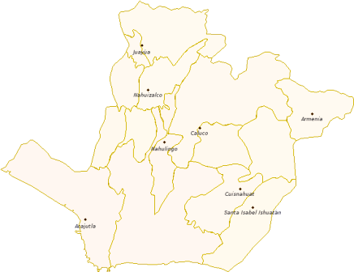
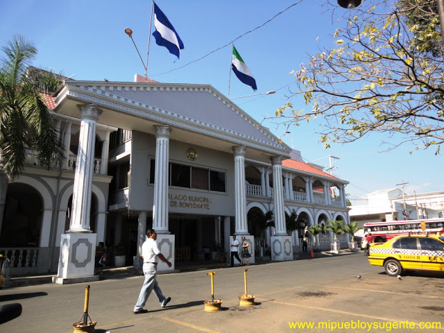
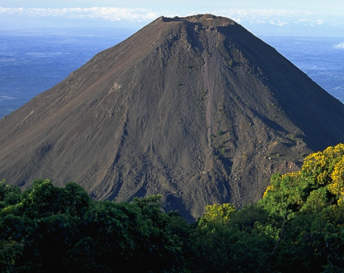

Sonsonate
El municipio Sonsonate, tiene una población estimada de 72 158 habitantes para el año 2013. La localidad se fundó con el nombre de "Villa de la Santísima Trinidad" en el año 1553, en una zona productora de cacao. El año 1821 formaba parte del territorio de Guatemala, pero en 1823 se anexó a El Salvador.
La celebración de la Semana Santa en Sonsonate se considera parte del patrimonio religioso del país.
En las primeras relaciones históricas sobre Sonsonate, se hacía referencia a que la ciudad había tomado el nombre del río de Sensunat, el cual era interpretado como "cuatrocientas aguas". Fray Francisco Vásquez, por su parte, lo interpretaba como "cuatrocientos ojos de agua".

Datos Basicos
Una vez consumada la conquista en la denominada provincia de los Izalcos, a mediados del siglo XVI, varias familias de españoles se asentaron en las tierras de los nativos. La zona era rica en recursos, ya que en ella se cultivaban el cacao y el bálsamo negro, que pronto comenzaron a exportarse. Sin embargo, los asentamientos de los españoles y la explotación de la tierra se desarrollaban sin orden alguno, lo que provocaba no pocos altercados.
Por esa razón, las leyes de la corona española prohibían que los peninsulares convivieran con los naturales.
El año 1552, y por iniciativa del mercader Antonio Domínguez junto a otros individuos con sus respectivas familias radicadas en las orillas del río Grande de Sonsonate,
fue solicitada la fundación de la villa del Espíritu Santo ante el alcalde mayor de Acajutla, Gonzalo de Alvarado. Autorizada la petición, se realizaron los respectivos trazos para erigir la pequeña urbe.

El municipio tiene un área de 232,53 km², y la cabecera una altitud de 220 msnm. Riegan al municipio numerosas quebradas y ríos, entre los cuales se encuentran: Grande o Sensunapán, Ceniza, Las Marías, Tepechapa, Apancayo, Chimalapa, Pupulapa, y El Coyol;
los accidentes geográficos más importantes son: los esteros de Barra Salada, El Maguey, Barra Ciega, y Dulce; las bocanas de los ríos Bandera, Mandinga y Apancoyo; así como la playa de Los Cóbanos. En su orografía destacan:
la Cadena Costera Central, y los cerros El Oratorio, Toncontín, Nicaragua, Las Mesas, Alto, El Muñeco, Caja de Agua y Las Palomas. Limita con los siguientes municipios: